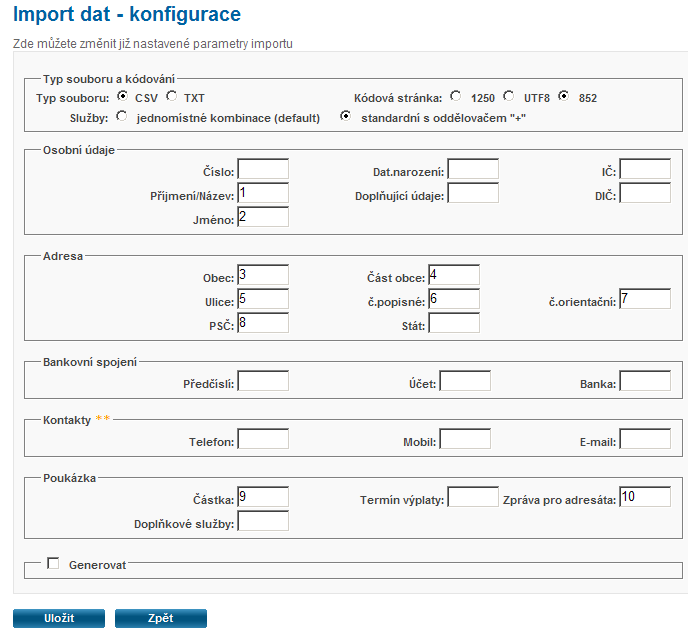
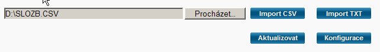

Programy vytvořené v prostředí PC FAND pracují pouze v základní části operační paměti (v dolních 640 KB). Vzhledem k rozsahu programu majetkové podíly je nutno mít při spuštění programu k dispozici cca 580 KB volné konvenční paměti pro bezproblémovou funkčnost. Pokud je k dispozici méně paměti, dojde při práci v rozsáhlejší pasáži programu (např. vytvoření sestavy podle formulářů) k ukončení programu s chybovým hlášením "Nestačí paměť".
Při spuštění programu MS-DOS pod WinXP je standardně k dispozici asi 608 KB volné paměti. Na některých počítačích z neznámých příčin dá systém k dispozici cca 550 KB volné paměti. Příčinou je umístění programu DOSX (53 KB) pro podporu DPMI programů do konvenční paměti a nikoliv do horní paměti. Spuštění této podpory je řízeno souborem AUTOEXEC.NT příkazem LH %SystemRoot%\system32\dosx.
Uvolnění paměti lze provést ve 3 krocích:
1. V distribuci je použit místo UFAND.EXE program UFANDB.EXE (Fand bez podpory grafů), který má menší paměťové nároky o cca 8 KB. Pokud se rozhodnete pro instalaci tohoto programu, změňte si v dávkovém souboru MP.BAT příkaz pro spuštění na UFAND\UFANDB.EXE MP.RDB
2. Můžete snížit vymezení pracovní oblasti fandu v paměti doplněním příkazu SET FANDOVRB=80. Zadaná hodnota udává počet KB paměti. Pokud příkaz není zadán, je implicitně vyhrazeno 124 KB. Povolené hodnoty jsou 80 až 134. Použití tohoto příkazu teoreticky sníží rychlost programu.
př. souboru MP.BAT
@echo off
mode con lines=43
kb16 us
set fandovrb=80
ufand\ufandb.exe mp.rdb
3. Dále můžete vyřadit správu horní paměti pro podporu DPMI programů, protože FAND s ní nepracuje. Protože je nutné brát ohled na jiné DOS programy, které s horní pamětí pracují (MZDY97, MAJETEK), nelze vyřadit spuštění DOSX v souboru AUTOEXEC.NT v adresáři WINDOWS\SYSTEM32. Pro tento účel je v adresáři UFAND vzorový soubor FandAuto.NT. Použití tohoto nastavení prostředí pro spuštění majetkových podílů uděláte tak, že k programu UFANDB.EXE vyvoláte systémovou nabídku (klávesou ShiftF10 nebo pravým tlačítkem myši např. v průzkumníkovi nebo v Total Commanderu). Vyberete "Vlastnosti". Vlezete na záložku "Program". Zvolte tlačítko "Upřesnit". Do názvu souboru Autoexec zadejte absolutní cestu k náhradnímu souboru, tedy "C:\MP\UFAND\FANDAUTO.NT". Do pole příkazový řádek přepište cestu k dávkovému souboru MP.BAT (např. C:\MP\MP.BAT). Vyplňte pracovní adresář (např. C:\MP). Tímto se vytvoří soubor UFANDB.PIF. Tento můžete přejmenovat na MP.PIF. Na ploše vytvoříte zástupce tohoto souboru. Po spuštění tohoto zástupce v okně můžete upravit velikost písma z nabídky Vlastnosti v levém horním rohu. Po potvrzení tlačítkem OK zvolit "Uložit vlastnosti pro další okna se stejným názvem".
Vzorový soubor MP.PIF stáhněte zde ...
.
Import do internetové aplikace Podání online provedete:
- otevřít http://www.cpost.cz
- přihlásit do klientské zóny
- vybrat <Podání online - Vstup do podání online>
- vybrat záložku <Poukázky B>
- vybrat sekci <Import dat>
- vybrat <Konfigurace> a nastavit parametry importu a
pořadí údajů v CSV souboru takto:
- Typ souboru CSV
- Kódová stránka 852
- Služby standardní s oddělovačem "+"
- pořadí importovaných polí nastavit následovněNázev údaje Pořadí Příjmení/Název 1 Jméno 2 Obec 3 Část obce 4 Ulice 5 Číslo popisné 6 Číslo orientační 7 PSČ 8 Částka 9 Zpráva pro adresáta 10 - provedené změny uložit tlačítkem <Uložit>
- vrátit se do nabídky importu tlačítkem <Zpět>

- tlačítkem <Procházet ...> najít soubor SlozB.CSV
- spustit import dat ve tlačítkem <Import CSV>

- v dalším okně je nutno zvolit nový soubor podání nebo kliknout na již vytvořené podání, kam bude import přidán
- import probíhá pomalu, takže je vhodné používat tlačítko <Aktualizovat> a sledovat ve výpisu, kolik záznamů je již zpracováno
- musíte počkat, dokud se v seznamu nevypíše
hlášení, že import je ukončen.